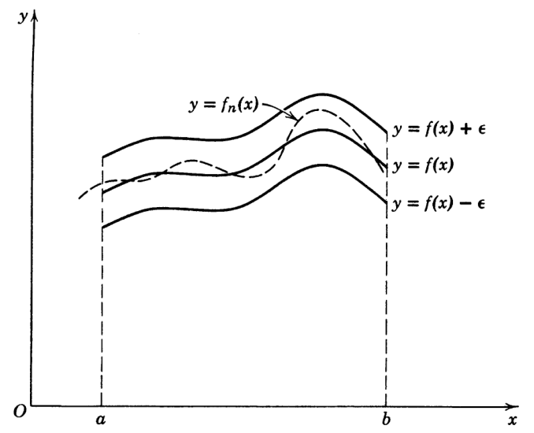
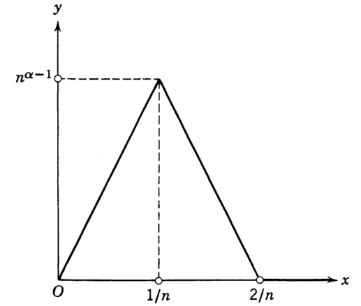
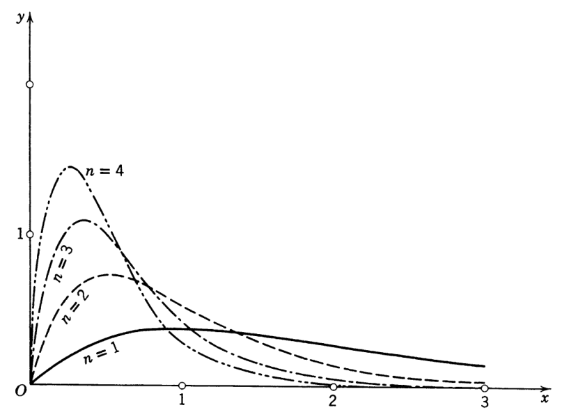
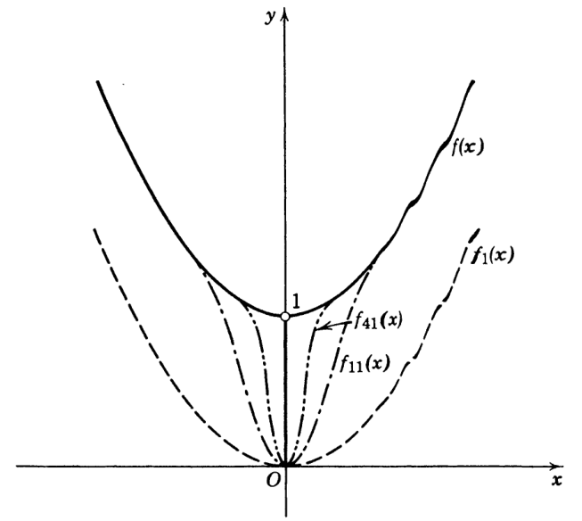

a. 一般说明与定义
读者应当清楚掌握函数收敛与曲线收敛的区别。这牵涉函数列或函数项级数的非一致收敛 ，值得仔细讨论。
说 f ( x ) f(x) f ( x ) f 1 ( x ) , f 2 ( x ) , … f_1(x),f_2(x),\ldots f 1 ( x ) , f 2 ( x ) , … a ≤ x ≤ b a\le x\le b a ≤ x ≤ b x x x f ( x ) = lim n → ∞ f n ( x ) f(x)=\lim_{n\to\infty}f_n(x) f ( x ) = lim n → ∞ f n ( x ) x x x ϵ \epsilon ϵ N N N f n ( x ) f_n(x) f n ( x ) f ( x ) − ϵ f(x)-\epsilon f ( x ) − ϵ f ( x ) + ϵ f(x)+\epsilon f ( x ) + ϵ 所有 的 x x x y = f n ( x ) y=f_n(x) y = f n ( x )

图 7.4 一致收敛的几何意义。 如果对任何预先指定的正误差限 ϵ \epsilon ϵ x x x N ( ϵ ) N(\epsilon) N ( ϵ ) 一致逼近 。也就是说，lim n → ∞ f n ( x ) = f ( x ) \lim_{n\to\infty} f_n(x)=f(x) lim n → ∞ f n ( x ) = f ( x ) a ≤ x ≤ b a\le x\le b a ≤ x ≤ b 一致 成立，是指对每个 ϵ > 0 \epsilon>0 ϵ > 0 N = N ( ϵ ) N=N(\epsilon) N = N ( ϵ ) n > N n>N n > N x x x ∣ f ( x ) − f n ( x ) ∣ < ϵ |f(x)-f_n(x)|<\epsilon ∣ f ( x ) − f n ( x ) ∣ < ϵ
原注 1（第 530 页） 可与第 41 页一致连续性的类似定义比较。那里也可选择同一个与 x x x δ ( ϵ ) \delta(\epsilon) δ ( ϵ )
非一致收敛的例子。 几个反例能使一致收敛的概念更清楚。
(a) 再看刚讨论过的 f n ( x ) = x n f_n(x)=x^n f n ( x ) = x n 0 ≤ x ≤ 1 0\le x\le1 0 ≤ x ≤ 1 0 ≤ x < 1 0\le x<1 0 ≤ x < 1 f ( x ) = 0 f(x)=0 f ( x ) = 0 f ( 1 ) = 1 f(1)=1 f ( 1 ) = 1 ϵ > 0 \epsilon>0 ϵ > 0 x = ξ x=\xi x = ξ n n n ∣ ξ n − f ( ξ ) ∣ < ϵ |\xi^n-f(\xi)|<\epsilon ∣ ξ n − f ( ξ ) ∣ < ϵ ϵ = 1 2 \epsilon=\tfrac12 ϵ = 2 1 n n n x = η ≠ 1 x=\eta\ne1 x = η = 1 ∣ η n − f ( η ) ∣ = η n > 1 2 |\eta^n-f(\eta)|=\eta^n>\tfrac12 ∣ η n − f ( η ) ∣ = η n > 2 1 1 / 2 n < η < 1 \sqrt[n]{1/2}<\eta<1 n 1/2 < η < 1 n n n ∣ f ( x ) − f n ( x ) ∣ |f(x)-f_n(x)| ∣ f ( x ) − f n ( x ) ∣ 1 2 \tfrac12 2 1 n n n ξ \xi ξ f n ( ξ ) f_n(\xi) f n ( ξ ) f ( ξ ) = 0 f(\xi)=0 f ( ξ ) = 0
函数 f n ( x ) = 1 / ( 1 + x 2 n ) f_n(x)=1/(1+x^{2n}) f n ( x ) = 1/ ( 1 + x 2 n ) x = 1 x=1 x = 1 x = − 1 x=-1 x = − 1 ∣ x ∣ < 1 |x|<1 ∣ x ∣ < 1 ∣ x ∣ = 1 |x|=1 ∣ x ∣ = 1 1 2 \tfrac12 2 1 ∣ x ∣ > 1 |x|>1 ∣ x ∣ > 1
(b) 上述两例的非一致收敛同极限函数不连续相联系。但也很容易构造连续函数列，它收敛于一个连续 函数，收敛却仍不一致。在 0 ≤ x ≤ 1 0\le x\le1 0 ≤ x ≤ 1 n ≥ 2 n\ge2 n ≥ 2
f n ( x ) = { x n α , 0 ≤ x ≤ 1 / n , ( 2 / n − x ) n α , 1 / n ≤ x ≤ 2 / n , 0 , 2 / n ≤ x ≤ 1.
f_n(x)=\begin{cases}
xn^\alpha,&0\le x\le1/n,\\
(2/n-x)n^\alpha,&1/n\le x\le2/n,\\
0,&2/n\le x\le1 .
\end{cases}
f n ( x ) = ⎩ ⎨ ⎧ x n α , ( 2/ n − x ) n α , 0 , 0 ≤ x ≤ 1/ n , 1/ n ≤ x ≤ 2/ n , 2/ n ≤ x ≤ 1. α \alpha α 0 ≤ x ≤ 2 / n 0\le x\le2/n 0 ≤ x ≤ 2/ n x = 2 / n x=2/n x = 2/ n x x x

图 7.5 非一致收敛的例子。 顶点高度为 n α − 1 n^{\alpha-1} n α − 1 α < 1 \alpha<1 α < 1 n n n x x x f n f_n f n f ( x ) = 0 f(x)=0 f ( x ) = 0 α = 1 \alpha=1 α = 1 α > 1 \alpha>1 α > 1 α \alpha α f ( x ) = 0 f(x)=0 f ( x ) = 0 x > 0 x>0 x > 0 n n n 2 / n < x 2/n<x 2/ n < x f n ( x ) = 0 f_n(x)=0 f n ( x ) = 0 x = 0 x=0 x = 0 f n ( 0 ) f_n(0) f n ( 0 ) α ≥ 1 \alpha\ge1 α ≥ 1 n n n ∣ f ( x ) − f n ( x ) ∣ = f n ( x ) |f(x)-f_n(x)|=f_n(x) ∣ f ( x ) − f n ( x ) ∣ = f n ( x ) 1 2 \tfrac12 2 1
(c) 函数列 f n ( x ) = n α x e − n x f_n(x)=n^\alpha x e^{-nx} f n ( x ) = n α x e − n x x > 0 x>0 x > 0 e − n x e^{-nx} e − n x 1 / n 1/n 1/ n f n ( x ) → 0 f_n(x)\to0 f n ( x ) → 0 x = 0 x=0 x = 0 f n ( x ) = 0 f_n(x)=0 f n ( x ) = 0 a > 0 a>0 a > 0 0 ≤ x ≤ a 0\le x\le a 0 ≤ x ≤ a f ( x ) = lim f n ( x ) = 0 f(x)=\lim f_n(x)=0 f ( x ) = lim f n ( x ) = 0 x = 1 / n x=1/n x = 1/ n
f n ( 1 / n ) = n α − 1 e .
f_n(1/n)=\frac{n^{\alpha-1}}e .
f n ( 1/ n ) = e n α − 1 . 当 α ≥ 1 \alpha\ge1 α ≥ 1 n n n 1 / n 1/n 1/ n n n n x = 1 / n x=1/n x = 1/ n f n ( x ) − f ( x ) = f n ( x ) > 1 / ( 2 e ) f_n(x)-f(x)=f_n(x)>1/(2e) f n ( x ) − f ( x ) = f n ( x ) > 1/ ( 2 e )

图 7.6 函数列 的非一致收敛。 (d) 一致与非一致收敛当然也适用于无穷级数。级数 g 1 ( x ) + g 2 ( x ) + ⋯ g_1(x)+g_2(x)+\cdots g 1 ( x ) + g 2 ( x ) + ⋯ f n ( x ) f_n(x) f n ( x )
f ( x ) = x 2 + x 2 1 + x 2 + x 2 ( 1 + x 2 ) 2 + x 2 ( 1 + x 2 ) 3 + ⋯ .
f(x)=x^2+\frac{x^2}{1+x^2}+\frac{x^2}{(1+x^2)^2}+\frac{x^2}{(1+x^2)^3}+\cdots .
f ( x ) = x 2 + 1 + x 2 x 2 + ( 1 + x 2 ) 2 x 2 + ( 1 + x 2 ) 3 x 2 + ⋯ . x = 0 x=0 x = 0 f n ( x ) = x 2 + ⋯ + x 2 / ( 1 + x 2 ) n − 1 f_n(x)=x^2+\cdots+x^2/(1+x^2)^{n-1} f n ( x ) = x 2 + ⋯ + x 2 / ( 1 + x 2 ) n − 1 f ( 0 ) = 0 f(0)=0 f ( 0 ) = 0 x ≠ 0 x\ne0 x = 0 1 / ( 1 + x 2 ) < 1 1/(1+x^2)<1 1/ ( 1 + x 2 ) < 1
x 2 1 − 1 / ( 1 + x 2 ) = 1 + x 2 .
\frac{x^2}{1-1/(1+x^2)}=1+x^2 .
1 − 1/ ( 1 + x 2 ) x 2 = 1 + x 2 . 因此，除 x = 0 x=0 x = 0 f ( x ) = 1 + x 2 f(x)=1+x^2 f ( x ) = 1 + x 2 f ( 0 ) = 0 f(0)=0 f ( 0 ) = 0

图 7.7 部分和趋于一个有可去间断点的函数。 在任何包含原点的非退化区间内，收敛都不一致。读者可以验证，余项 r n ( x ) = f ( x ) − f n ( x ) r_n(x)=f(x)-f_n(x) r n ( x ) = f ( x ) − f n ( x ) x = 0 x=0 x = 0 1 / ( 1 + x 2 ) n − 1 1/(1+x^2)^{n-1} 1/ ( 1 + x 2 ) n − 1 1 2 \tfrac12 2 1 x x x n n n n n n x x x r n ( x ) r_n(x) r n ( x ) 1 2 \tfrac12 2 1 x = 0 x=0 x = 0 n n n y = 1 + x 2 y=1+x^2 y = 1 + x 2 y y y
再举一例。在 0 ≤ x ≤ 1 0\le x\le1 0 ≤ x ≤ 1 g 0 ( x ) = 1 g_0(x)=1 g 0 ( x ) = 1 g ν ( x ) = x ν − x ν − 1 g_\nu(x)=x^\nu-x^{\nu-1} g ν ( x ) = x ν − x ν − 1 ν ≥ 1 \nu\ge1 ν ≥ 1 ∑ ν = 0 ∞ g ν ( x ) \sum_{\nu=0}^\infty g_\nu(x) ∑ ν = 0 ∞ g ν ( x ) x ν x^\nu x ν
b. 一致收敛的一种判别法
可见，一致收敛是函数列或级数的一种特殊性质。重述它对无穷级数的意义：若给定任意小的正误差限 ϵ \epsilon ϵ g 1 ( x ) + ⋯ + g N ( x ) = f N ( x ) g_1(x)+\cdots+g_N(x)=f_N(x) g 1 ( x ) + ⋯ + g N ( x ) = f N ( x ) f ( x ) f(x) f ( x ) x x x g 1 ( x ) + g 2 ( x ) + ⋯ g_1(x)+g_2(x)+\cdots g 1 ( x ) + g 2 ( x ) + ⋯ f ( x ) f(x) f ( x )
同样有一个无需预知极限函数的柯西准则：级数一致收敛（等价地，函数列 f n ( x ) f_n(x) f n ( x ) ϵ > 0 \epsilon>0 ϵ > 0 x x x N N N n , m > N n,m>N n , m > N ∣ f n ( x ) − f m ( x ) ∣ < ϵ |f_n(x)-f_m(x)|<\epsilon ∣ f n ( x ) − f m ( x ) ∣ < ϵ 的确，若一致收敛，可选定 N N N ∣ f n ( x ) − f ( x ) ∣ |f_n(x)-f(x)| ∣ f n ( x ) − f ( x ) ∣ ∣ f m ( x ) − f ( x ) ∣ |f_m(x)-f(x)| ∣ f m ( x ) − f ( x ) ∣ ϵ / 2 \epsilon/2 ϵ /2 f ( x ) f(x) f ( x ) n > N n>N n > N m → ∞ m\to\infty m → ∞
∣ f n ( x ) − f ( x ) ∣ = lim m → ∞ ∣ f n ( x ) − f m ( x ) ∣ ≤ ϵ .
|f_n(x)-f(x)|=\lim_{m\to\infty}|f_n(x)-f_m(x)|\le\epsilon .
∣ f n ( x ) − f ( x ) ∣ = m → ∞ lim ∣ f n ( x ) − f m ( x ) ∣ ≤ ϵ . 对每个 x x x
正如就要看到的，恰是一致收敛使无穷级数以及函数的其他极限过程成为分析学中运用自如的工具。幸而在分析学及其应用的常见极限过程中，非一致收敛往往只出现于个别点的邻近，眼下不致带来太多麻烦。
通常用一个由常数项组成的优级数证明一致收敛。若 ∣ g ν ( x ) ∣ ≤ a ν |g_\nu(x)|\le a_\nu ∣ g ν ( x ) ∣ ≤ a ν a ν a_\nu a ν ∑ ν = 1 ∞ a ν \sum_{\nu=1}^\infty a_\nu ∑ ν = 1 ∞ a ν ∑ ν = 1 ∞ g ν ( x ) \sum_{\nu=1}^\infty g_\nu(x) ∑ ν = 1 ∞ g ν ( x ) 因为
∣ ∑ ν = n m g ν ( x ) ∣ ≤ ∑ ν = n m ∣ g ν ( x ) ∣ ≤ ∑ ν = n m a ν ,
\left|\sum_{\nu=n}^m g_\nu(x)\right|\le\sum_{\nu=n}^m|g_\nu(x)|\le\sum_{\nu=n}^m a_\nu ,
ν = n ∑ m g ν ( x ) ≤ ν = n ∑ m ∣ g ν ( x ) ∣ ≤ ν = n ∑ m a ν , 而柯西准则说明，选 m > n m>n m > n
第一例是几何级数 1 + x + x 2 + ⋯ 1+x+x^2+\cdots 1 + x + x 2 + ⋯ x x x ∣ x ∣ ≤ q |x|\le q ∣ x ∣ ≤ q q q q ∑ q ν \sum q^\nu ∑ q ν
c 1 sin ( x − δ 1 ) 1 2 + c 2 sin ( x − δ 2 ) 2 2 + c 3 sin ( x − δ 3 ) 3 2 + ⋯ .
\frac{c_1\sin(x-\delta_1)}{1^2}+\frac{c_2\sin(x-\delta_2)}{2^2}+
\frac{c_3\sin(x-\delta_3)}{3^2}+\cdots .
1 2 c 1 sin ( x − δ 1 ) + 2 2 c 2 sin ( x − δ 2 ) + 3 2 c 3 sin ( x − δ 3 ) + ⋯ . 若 ∣ c n ∣ < c |c_n|<c ∣ c n ∣ < c c > 0 c>0 c > 0 n n n g n ( x ) = c n sin ( x − δ n ) / n 2 g_n(x)=c_n\sin(x-\delta_n)/n^2 g n ( x ) = c n sin ( x − δ n ) / n 2 ∣ g n ( x ) ∣ < c / n 2 |g_n(x)|<c/n^2 ∣ g n ( x ) ∣ < c / n 2 ∑ n = 1 ∞ c / n 2 \sum_{n=1}^\infty c/n^2 ∑ n = 1 ∞ c / n 2
c. 连续函数项级数一致收敛时和函数的连续性
一致收敛的意义在于，一致收敛的级数在许多方面同有限个函数之和有相同的性质。例如，有限个连续函数之和仍连续，相应地有：
定理。 若连续函数项级数在一个区间上一致收敛，则和函数也连续。
证明。 将 f ( x ) = g 1 ( x ) + g 2 ( x ) + ⋯ f(x)=g_1(x)+g_2(x)+\cdots f ( x ) = g 1 ( x ) + g 2 ( x ) + ⋯ n n n f n ( x ) = g 1 ( x ) + ⋯ + g n ( x ) f_n(x)=g_1(x)+\cdots+g_n(x) f n ( x ) = g 1 ( x ) + ⋯ + g n ( x ) R n ( x ) R_n(x) R n ( x ) ϵ > 0 \epsilon>0 ϵ > 0 n n n ∣ R n ( x ) ∣ < ϵ / 4 |R_n(x)|<\epsilon/4 ∣ R n ( x ) ∣ < ϵ /4 x , x + h x,x+h x , x + h
∣ R n ( x + h ) − R n ( x ) ∣ < ϵ / 2.
|R_n(x+h)-R_n(x)|<\epsilon/2.
∣ R n ( x + h ) − R n ( x ) ∣ < ϵ /2. 部分和是有限个连续函数之和，因而连续。故对区间中每个 x x x δ > 0 \delta>0 δ > 0 ∣ h ∣ < δ |h|<\delta ∣ h ∣ < δ x + h x+h x + h ∣ f n ( x + h ) − f n ( x ) ∣ < ϵ / 2 |f_n(x+h)-f_n(x)|<\epsilon/2 ∣ f n ( x + h ) − f n ( x ) ∣ < ϵ /2
∣ f ( x + h ) − f ( x ) ∣ = ∣ f n ( x + h ) − f n ( x ) + R n ( x + h ) − R n ( x ) ∣ ≤ ∣ f n ( x + h ) − f n ( x ) ∣ + ∣ R n ( x + h ) − R n ( x ) ∣ < ϵ .
\begin{aligned}
|f(x+h)-f(x)|
&=|f_n(x+h)-f_n(x)+R_n(x+h)-R_n(x)|\\
&\le |f_n(x+h)-f_n(x)|+|R_n(x+h)-R_n(x)|<\epsilon .
\end{aligned}
∣ f ( x + h ) − f ( x ) ∣ = ∣ f n ( x + h ) − f n ( x ) + R n ( x + h ) − R n ( x ) ∣ ≤ ∣ f n ( x + h ) − f n ( x ) ∣ + ∣ R n ( x + h ) − R n ( x ) ∣ < ϵ . 这正是所需的连续性。
前面的例子已说明，连续函数项级数若不一致收敛，其和未必连续，因而可见这个定理的重要性。由定理可知：若连续函数项收敛级数的和有一个间断点，则在这个点的任一邻域内，收敛都不一致。所以凡用连续函数项级数表示间断函数，必定要用到非一致收敛的极限过程。
d. 一致收敛级数的积分
有限个连续函数之和可以「逐项」积分，即分别求各项积分，再把结果相加，就得到和的积分。对于连续函数项的无穷级数，只要在积分区间内一致收敛，同样可以这样做。
在一个有界区间内一致收敛的连续函数项级数 ∑ ν = 1 ∞ g ν ( x ) = f ( x ) \sum_{\nu=1}^\infty g_\nu(x)=f(x) ∑ ν = 1 ∞ g ν ( x ) = f ( x ) 更确切地说，若 a , x a,x a , x ∑ ν = 1 ∞ ∫ a x g ν ( t ) d t \sum_{\nu=1}^\infty\int_a^x g_\nu(t)\,dt ∑ ν = 1 ∞ ∫ a x g ν ( t ) d t x x x ∫ a x f ( t ) d t \int_a^x f(t)\,dt ∫ a x f ( t ) d t
原注 1（第 537 页） 这里须用定积分。例如 g ν ( x ) = 0 g_\nu(x)=0 g ν ( x ) = 0 ∑ ν = 1 ∞ g ν ( x ) \sum_{\nu=1}^\infty g_\nu(x) ∑ ν = 1 ∞ g ν ( x ) ∫ g ν ( x ) d x = 常数 = c \int g_\nu(x)\,dx=\text{常数}=c ∫ g ν ( x ) d x = 常数 = c ∑ ν = 1 ∞ c \sum_{\nu=1}^\infty c ∑ ν = 1 ∞ c
为证明，仍写 f ( x ) = ∑ ν = 1 ∞ g ν ( x ) = f n ( x ) + R n ( x ) f(x)=\sum_{\nu=1}^\infty g_\nu(x)=f_n(x)+R_n(x) f ( x ) = ∑ ν = 1 ∞ g ν ( x ) = f n ( x ) + R n ( x ) ϵ > 0 \epsilon>0 ϵ > 0 N N N n > N n>N n > N x x x ∣ R n ( x ) ∣ < ϵ |R_n(x)|<\epsilon ∣ R n ( x ) ∣ < ϵ
∣ ∫ a x [ f ( t ) − f n ( t ) ] d t ∣ ≤ ϵ l ,
\left|\int_a^x[f(t)-f_n(t)]\,dt\right|\le\epsilon l ,
∫ a x [ f ( t ) − f n ( t )] d t ≤ ϵ l , 其中 l l l f n f_n f n
∣ ∫ a x f ( t ) d t − ∑ ν = 1 n ∫ a x g ν ( t ) d t ∣ ≤ ϵ l .
\left|\int_a^x f(t)\,dt-\sum_{\nu=1}^n\int_a^x g_\nu(t)\,dt\right|\le\epsilon l .
∫ a x f ( t ) d t − ν = 1 ∑ n ∫ a x g ν ( t ) d t ≤ ϵ l . 右端可以任意小，因而
∑ ν = 1 ∞ ∫ a x g ν ( t ) d t = lim n → ∞ ∑ ν = 1 n ∫ a x g ν ( t ) d t = ∫ a x f ( t ) d t .
\sum_{\nu=1}^\infty\int_a^x g_\nu(t)\,dt
=\lim_{n\to\infty}\sum_{\nu=1}^n\int_a^x g_\nu(t)\,dt=\int_a^x f(t)\,dt.
ν = 1 ∑ ∞ ∫ a x g ν ( t ) d t = n → ∞ lim ν = 1 ∑ n ∫ a x g ν ( t ) d t = ∫ a x f ( t ) d t . 由于 l l l x x x
改用函数列的语言，结论是：若函数列 f 1 ( x ) , f 2 ( x ) , … f_1(x),f_2(x),\ldots f 1 ( x ) , f 2 ( x ) , … f ( x ) f(x) f ( x ) a , b a,b a , b
∫ a b f ( x ) d x = lim n → ∞ ∫ a b f n ( x ) d x . (7)
\int_a^b f(x)\,dx=\lim_{n\to\infty}\int_a^b f_n(x)\,dx . \tag{7}
∫ a b f ( x ) d x = n → ∞ lim ∫ a b f n ( x ) d x . ( 7 ) 就是说，可以交换积分与取极限的次序。
以十八世纪流行的直观看来，这种交换似乎不容置疑。可回顾 §7.4a 的例子就知道，在非一致收敛时，上式未必成立。在例 (b)（第 530 页）中，极限函数的积分为零，而 ∫ 0 1 f n ( x ) d x \int_0^1 f_n(x)\,dx ∫ 0 1 f n ( x ) d x n α − 2 n^{\alpha-2} n α − 2 α ≥ 2 \alpha\ge2 α ≥ 2 1 ≤ α < 2 1\le\alpha<2 1 ≤ α < 2 lim n → ∞ ∫ 0 1 f n ( x ) d x = ∫ 0 1 f ( x ) d x \lim_{n\to\infty}\int_0^1f_n(x)\,dx=\int_0^1 f(x)\,dx lim n → ∞ ∫ 0 1 f n ( x ) d x = ∫ 0 1 f ( x ) d x g 0 ( x ) = 1 g_0(x)=1 g 0 ( x ) = 1 g n ( x ) = x n − x n − 1 g_n(x)=x^n-x^{n-1} g n ( x ) = x n − x n − 1 n ≥ 1 n\ge1 n ≥ 1
e. 无穷级数的求导
一致收敛的级数或函数列在求导时的表现同积分大不相同。例如 f n ( x ) = sin ( n 2 x ) / n f_n(x)=\sin(n^2x)/n f n ( x ) = sin ( n 2 x ) / n f ( x ) = 0 f(x)=0 f ( x ) = 0 f n ′ ( x ) = n cos ( n 2 x ) f'_n(x)=n\cos(n^2x) f n ′ ( x ) = n cos ( n 2 x ) f ′ ( x ) = 0 f'(x)=0 f ′ ( x ) = 0 x = 0 x=0 x = 0
无穷级数当然也一样。例如
sin x + sin ( 2 4 x ) 2 2 + sin ( 3 4 x ) 3 2 + ⋯
\sin x+\frac{\sin(2^4x)}{2^2}+\frac{\sin(3^4x)}{3^2}+\cdots
sin x + 2 2 sin ( 2 4 x ) + 3 2 sin ( 3 4 x ) + ⋯ 绝对且一致收敛，因为各项的绝对值不大于收敛级数 1 / 1 2 + 1 / 2 2 + 1 / 3 2 + ⋯ 1/1^2+1/2^2+1/3^2+\cdots 1/ 1 2 + 1/ 2 2 + 1/ 3 2 + ⋯
cos x + 2 2 cos ( 2 4 x ) + 3 2 cos ( 3 4 x ) + ⋯
\cos x+2^2\cos(2^4x)+3^2\cos(3^4x)+\cdots
cos x + 2 2 cos ( 2 4 x ) + 3 2 cos ( 3 4 x ) + ⋯ 在 x = 0 x=0 x = 0
在具体情形中，保证可以逐项求导的实用准则如下。设级数 ∑ ν = 0 ∞ G ν ( x ) = F ( x ) \sum_{\nu=0}^\infty G_\nu(x)=F(x) ∑ ν = 0 ∞ G ν ( x ) = F ( x ) ∑ ν = 0 ∞ g ν ( x ) = f ( x ) \sum_{\nu=0}^\infty g_\nu(x)=f(x) ∑ ν = 0 ∞ g ν ( x ) = f ( x ) 因此，求出各项的导数之后，还须专门检验所得到的级数是否一致收敛。
证明很简单。根据 §7.4d，求导所得的级数可以逐项积分。记住 g ν ( t ) = G ν ′ ( t ) g_\nu(t)=G'_\nu(t) g ν ( t ) = G ν ′ ( t )
∫ a x f ( t ) d t = ∫ a x ( ∑ ν = 0 ∞ g ν ( t ) ) d t = ∑ ν = 0 ∞ ∫ a x g ν ( t ) d t = ∑ ν = 0 ∞ [ G ν ( x ) − G ν ( a ) ] = F ( x ) − F ( a ) .
\int_a^x f(t)\,dt
=\int_a^x\left(\sum_{\nu=0}^\infty g_\nu(t)\right)dt
=\sum_{\nu=0}^\infty\int_a^x g_\nu(t)\,dt
=\sum_{\nu=0}^\infty[G_\nu(x)-G_\nu(a)]=F(x)-F(a).
∫ a x f ( t ) d t = ∫ a x ( ν = 0 ∑ ∞ g ν ( t ) ) d t = ν = 0 ∑ ∞ ∫ a x g ν ( t ) d t = ν = 0 ∑ ∞ [ G ν ( x ) − G ν ( a )] = F ( x ) − F ( a ) . 这一等式对一致收敛区间内各点 x x x f ( x ) = F ′ ( x ) f(x)=F'(x) f ( x ) = F ′ ( x )